Dressage Levels
Dressage is separated into various levels based on horse and rider training. Movements, requirements, and expectations increase with each level. Below is a description of the USDF levels Intro through Third Level. The first two levels are considered beginning levels, which is why they are not given a number level.
Introductory Level
This is the first and most basic level of dressage. Judges are looking for a good foundation on which the riders and horses will build. This includes good rider position, balance, tempo, accuracy in patterns, and communication between horse and rider. The first two tests consist of only walk and rising trot; canter is introduced in the third test. Halts are perfomed through the walk. Riders are expected to be able to do 20-meter circles both directions, ride a straight line, and change direction at the walk and trot.
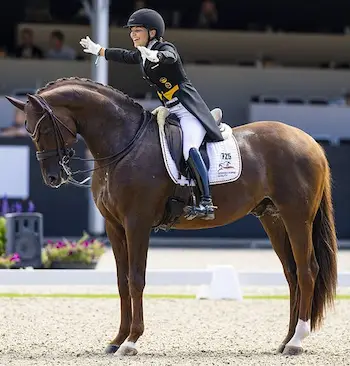
Photo Credit: FEI/ Leanjo de Koster - DigiShots
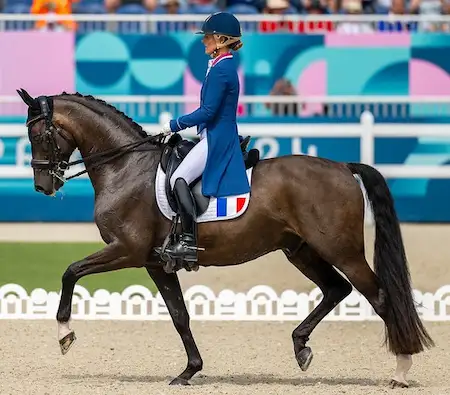
Photo Credit: FEI/ Benjamin Clark
Training Level
The second level of dressage expounds on what was done in the introductory level. All three tests contain canter. Halts proceed after trotting, but are performed through the walk. Free walk and working canter are introduced, along with a 3-loop serpentine. Judges expect smoother transitions, consistent bend, good rhythm, suppleness, and increased forwardness. The horse should readily accept contact with the bit.
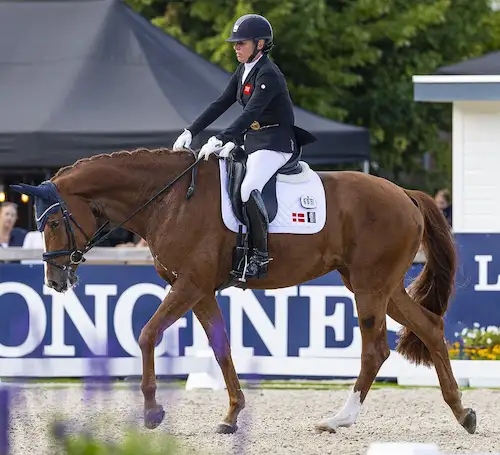
Photo Credit: FEI/ Leanjo de Koster - DigiShots
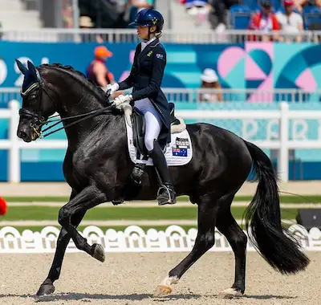
Photo Credit: FEI/ Benjamin Clark
First Level
This is the first level of the higher levels of dressage. Starting in first level, riders are given the option of performing musical freestyle tests. Judges expect solid basics, as well as increased thrust from the horses hind legs while maintaining connection and collection. Leg yields and lengthenings of the gaits are introduced in this level. The gait lengthenings should result in more suspension. All halts are performed through a trot with no walk steps. Horses and riders are also expected to perform a 10-meter half circle (called a loop), a 15-meter circle, and a 20-meter stretching-trot circle.
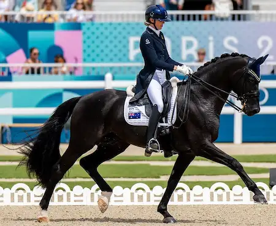
Photo Credit: FEI/ Benjamin Clark
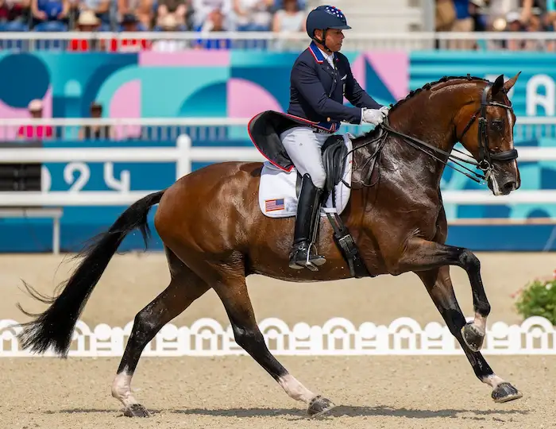
Photo Credit: FEI/ Benjamin Clark
Second Level
Collection begins to become a focus in second level. The horse is expected to move with a uphill tendency and have consistent contact with the bit. Self-carriage is also required. Expectations for balance, bending, straightness, throughness, and suppleness are increased. Horses and riders are [expected to be able to perform] both collected and medium trot and canter. They should also be able to do a counter-canter [via] a 3-loop serpentine and perform simple lead changes and walk backwards 3-4 steps. Lateral movements are also introduced in this level with the shoulder-in, travers, and half-turn on the haunches.
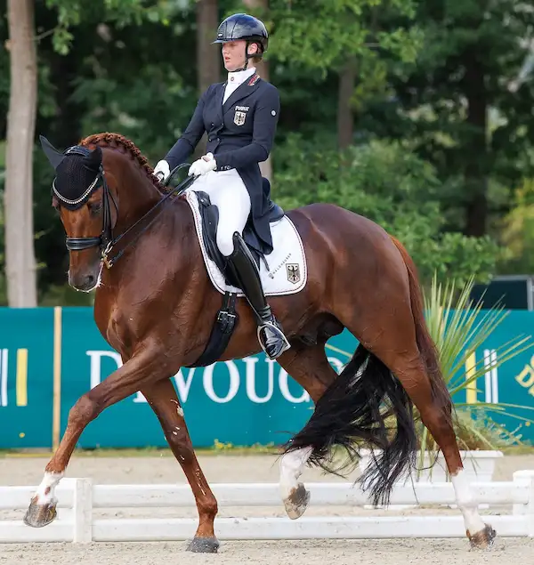
Photo Credit: FEI/ Libby Law Photography
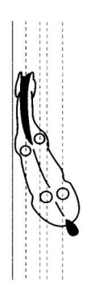
Photo Credit: FEI Dressage Judging Manual
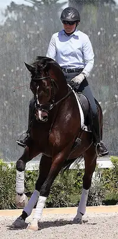
Photo Credit: Ken Braddick/ Dressage-news.com
Third Level
In this level, the horse is expected to have increased engagement; transitions should be clear and well-defined. Straightness, balance, bending, suppleness, throughness, and self-carriage should increase in quality with every level. Riders may choose to use a double bridle. Extended trot and canter with greater lengthenings and suspension are performed, along with a half-pass at both the trot and canter. Flying lead changes in the canter are also introduced.
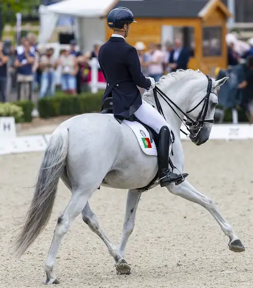
Photo Credit: FEI/ Leanjo de Koster
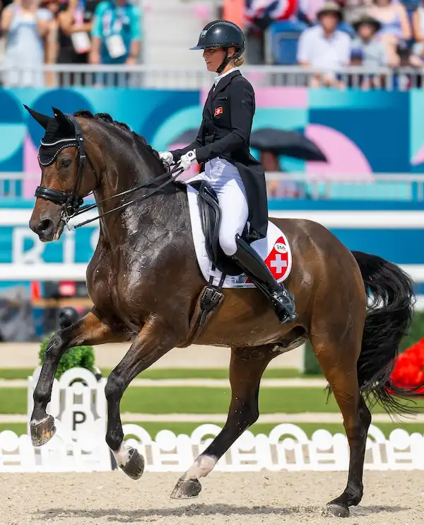
Photo Credit: FEI/ Benjamin Clark
Higher Levels
There are several more dressage levels, each with increasingly complex movements. These movements require well-trained, athletic horses and riders. Some of the movements present in these levels include Canter Pirouettes, Tempi-Changes, Passage, and Piaffe
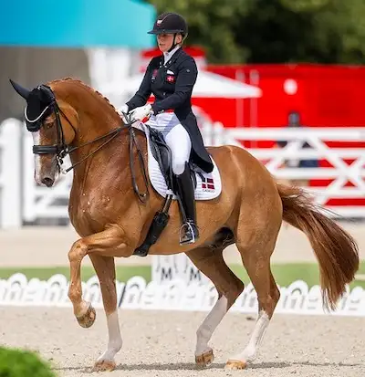
Photo Credit: FEI/ Benjamin Clark
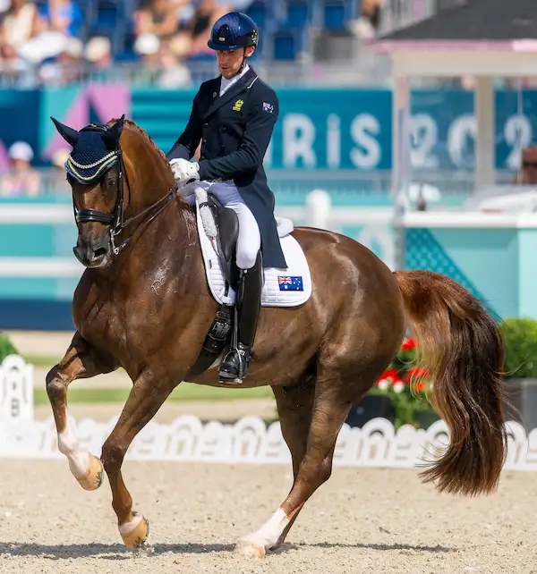
Photo Credit: FEI/ Benjamin Clark
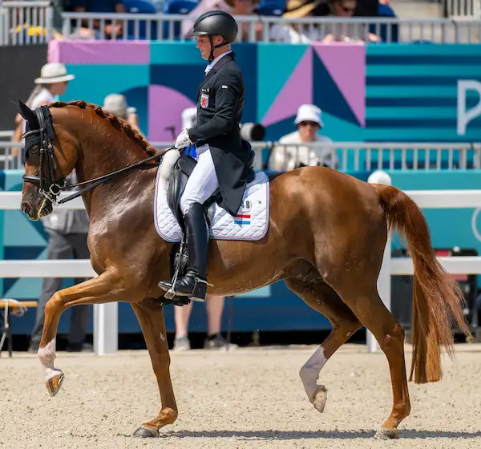
Photo Credit: FEI/ Benjamin Clark